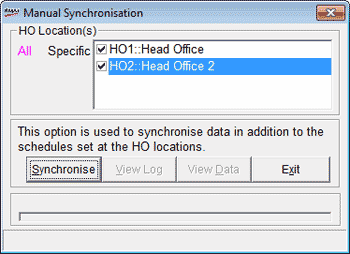

POS locations that are part of a business chain receives masters from the head office and send transaction data to the head office periodically. In Shoper 9, this is usually automated as per the schedule set at HO. This option is to synchronise data on an ad-hoc basis, apart from the scheduled data communication.
Shoper 9 POS has a Scheduler Service that is used to execute the scheduled activities. Click here for more information.
Note: To successfully use this option the necessary data communication setup needs to be done.
How to reach: Housekeeping > Synchronisation > Synchronise Manually
The Manual Synchronisation window is displayed as shown.

HO Location(s): Displays the list of HOs configured for synchronisation. Select All or Specific to select the HOs to which data is to be sent.